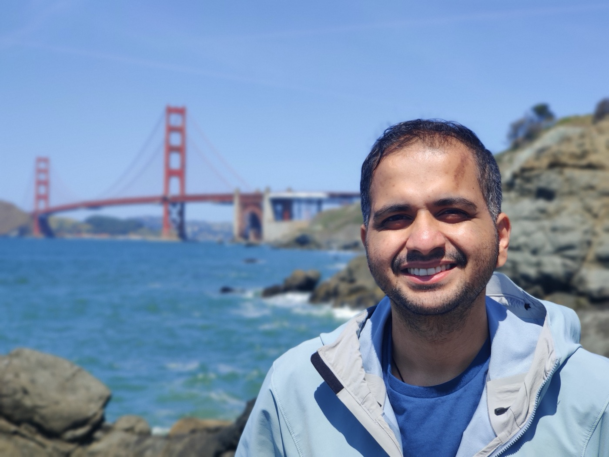

University of Minnesota, Twin Cities
Ph.D. in Computer Science
Dissertation work in spatial data science, trajectory analysis, possible rendezvous, uncertainty-aware spatial modeling, and knowledge-guided learning.
Spatial Data Science Researcher
Spatial data science, GIScience, trajectory analysis, and physics-informed learning for problems where location, movement, and uncertainty matter.
Scroll
About
I develop methods for spatial and spatiotemporal problems where data are incomplete, conditions shift across regions, and models must respect physical constraints. My work combines spatial data science, knowledge-guided machine learning, physics-informed learning, diffusion models, transformers, and process-based scientific models.
My core research is grounded in GIScience, trajectory analysis, indoor navigation, uncertainty-aware spatial modeling, and geographic computing. The recent project demos extend that foundation into remote sensing, 3D scene reasoning, maritime anomaly detection, and spatial computing in the broader sense of digital systems reasoning about maps, movement, and environments.
I earned my Ph.D. in Computer Science from the University of Minnesota, Twin Cities, advised by Prof. Shashi Shekhar and Prof. Vipin Kumar. At Esri, I shipped a maritime anomaly-detection pipeline on AWS that improved classification accuracy from 55% to 73%.
I hold the University of Minnesota Doctoral Dissertation Fellowship, and my research has been published in AAAI, SIAM SDM, ACM TIST, ACM TSAS, and ACM SIGSPATIAL.
Open to research and applied scientist roles
Updates
Research milestones, talks, awards, and publication updates from the academic portfolio.
The Path
Ph.D. in Computer Science
Dissertation work in spatial data science, trajectory analysis, possible rendezvous, uncertainty-aware spatial modeling, and knowledge-guided learning.
Research internship with Dr. Erik G. Hoel
Shipped an AWS pipeline for maritime anomaly detection and improved classification accuracy from 55% to 73%.
University of Minnesota
Fellowship support for dissertation-stage research in spatial data science and knowledge-guided machine learning.
GIScience / Navigation / Remote Sensing / Generative Modeling
Five runnable project repos that extend core spatial data science questions into Earth observation, satellite geometry, promptable segmentation, trajectory search, and maritime anomaly detection.
Applied Extensions
Runnable extensions of the publication themes. The through-line is spatial reasoning, GIScience, trajectory modeling, indoor and navigation-oriented spatial computing, and physics-guided learning.
Representative Papers Highlighted
Imported from the academic portfolio. Last update: Apr 2026. Each entry keeps the paper links, abstract, and bibtex where present.
Teaching
Project Library
Connect
Email: arunshar at umn dot edu